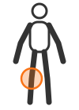
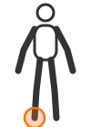
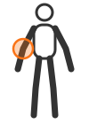
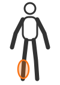

Injury Library
Understand common sports and gym injuries before your consultation.
Common Injuries
-

ACL Tear
A tear to the anterior cruciate ligament in the knee, common in sports involving sudden stops or direction changes, such as football and basketball.
-
Rotator Cuff Injury
Damage to the group of muscles and tendons surrounding the shoulder joint, often caused by repetitive overhead movement or heavy lifting.
-

Ankle Sprain
A stretch or tear of the ligaments around the ankle, typically from rolling or twisting the foot during running or jumping.
-
Lower Back Strain
Overstretching or tearing of muscles or tendons in the lower back, frequently caused by improper lifting technique or overtraining.
-

Tennis Elbow
Inflammation of the tendons on the outside of the elbow, caused by repetitive gripping or wrist movement.
-

Shin Splints
Pain along the shin bone caused by repetitive stress, common among runners increasing training intensity too quickly.